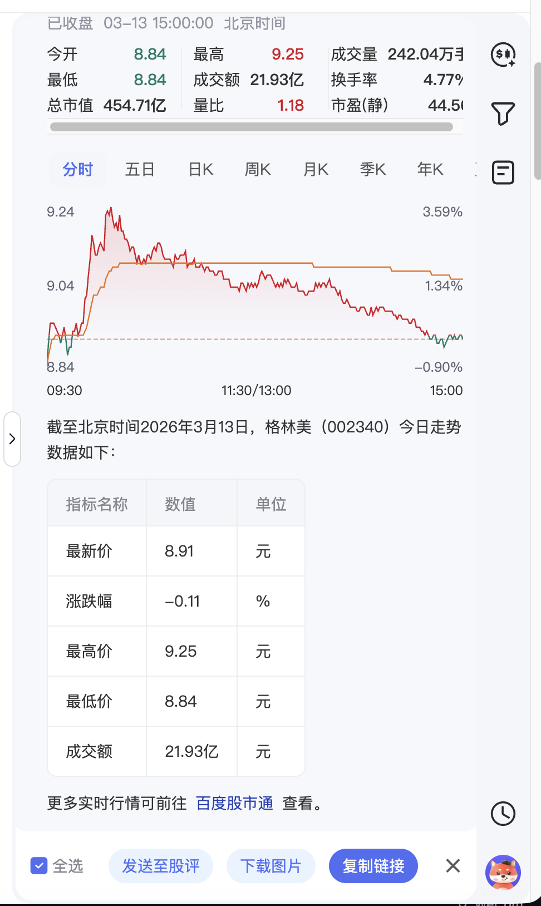
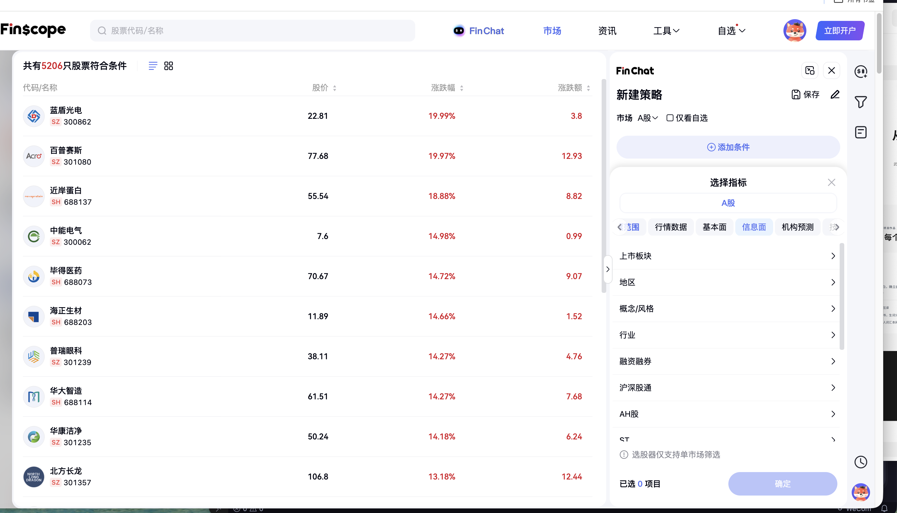

Finscope 金融智能体
核心命题：如何让一个金融搜索产品具备「智能体」的人格与决策能力？以「Agent 基础能力 → 多模态升级 → AI 选股深耕」三阶段路径，把 Finscope FinChat 打造成能看懂行情、能选股、能复盘的金融 Agent。
Agent 基础能力 —— 让它先「听懂问题」

FinChat 入口 — 用户在行情页以自然语言调起金融助手
我的角色与贡献
接手时 Agent 经常「答非所问」——用户问「茅台 PE」却推了百度百科。我构建了多级意图测试集 + 评分体系，逐条拆解 200+ Badcase，细化场景/实体/指标分类规则并持续调优 Prompt。同时定义了不同强弱点场景的「兜底策略」（比如，如无实时数据时给出最近一期财报而非空回复），让 Agent 从「偶尔能答对」进化为「多数场景能命中意图」。
多模态交互 —— 从「纯文本」到「可看、可存、可传播」

长按生成分享卡片：股评 / 链接 / 图片

输入自然语言 → 结构化研究报告（图文混排）
我的角色与贡献
纯文本对话无法留住用户。我独立输出完整 PRD，规划了A 页通栏强卡改造、项目化记忆、历史记录搜索、对话分享四大模块。其中分享模块设计了「股评 / 链接 / 图片」三种分享形态，打通了 Agent 对话到社区 Feed 的内容传播闭环——用户分析完成后一键发布到 FinScope 社区，让优质内容从私域流向公域。
AI 选股 —— 「点选 → 对话 → 策略」三阶段进化

阶段一：基础选股器 GUI — 指标组合筛选
我的角色与贡献
分析了 16w+ 用户选股 query 后，发现 PC 端「指标选股」是最大刚需。我设计了三阶段进化路径：阶段一基础选股器（GUI 点选指标组合）；阶段二自然语言选股（如「找到市盈率<20 且 ROE>15% 的消费股」→ 结构化结果）；阶段三策略/形态选股（如「近期突破 60 日均线的 AI 概念股」）。引入多轮追问 + 兜底逻辑，确保同一 Session 内持续对话不跳脱。设计了拆分→纠错→反问的容错链路，让选股从「一次性查询」变成「可推敲的分析过程」。
项目闭环：从「工具」到「助理」
三个阶段逐层叠加——基础能力让 Agent 能答、多模态让用户想看、选股能力让用户会来——最终推动 FinChat 从搜索页附属功能升级为独立流量入口，日均分发达成 4 倍跃升。